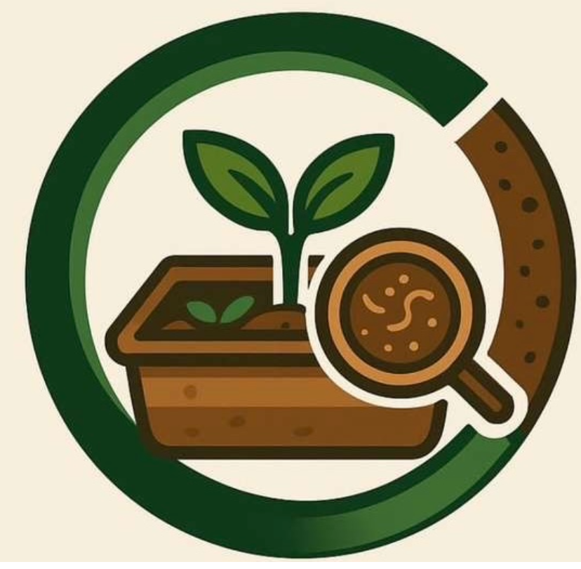

1
Trouver
L'utilisateur localise le composteur GreenLoop le plus proche depuis l'application.

GreenLoop simplifie le dépôt des déchets organiques en ville grâce à un composteur autonome, une identification par QR code et une application mobile claire.
Valorisation du dépôt et estimation du compost produit.
L'utilisateur localise le composteur GreenLoop le plus proche depuis l'application.
Le QR code sécurise l'accès et permet de reconnaître l'utilisateur.
Les déchets verts sont pesés et valorisés automatiquement dans le système.
Les points et le compost disponible peuvent être suivis depuis l'app.
Des acteurs engagés qui accompagnent et soutiennent GreenLoop.